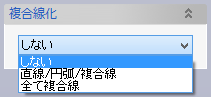
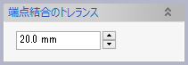

スケッチ変換
スケッチ変換
3D要素をスケッチ平面に投影してスケッチ点、線を作成します。
操作方法
変換したい要素（複数可）を選択して、OKボタンで実行します。
点、頂点、カーブ、エッジ、フェイスが選択できます。(フェイスはフェイスのエッジが線要素として作成されます。)
パラメータ
- 変換する要素

- レイヤー
作成される要素のレイヤーを指定します。
- 関連づけを変更
チェックすると、変換もとの要素との関連を変更できます。既定値は「フィーチャー」です。
- レイヤー
- 複合線化
 
- しない
スケッチ平面上に作成されたカーブを複合線にしません。
- 直線/円弧/複合線
スケッチ平面上に作成されたカーブのうち、直線と円弧は独立した要素のまま、それ以外はつながっているカーブ群をひとつの複合線にします。カーブがつながっているかどうかの判定に使うトレランスを指定できます。
- 全て複合線
スケッチ平面上に作成されたカーブを、その種類にかかわらず、つながっていたら複合線にします。カーブがつながっているかどうかの判定に使うトレランスを指定できます。
- しない